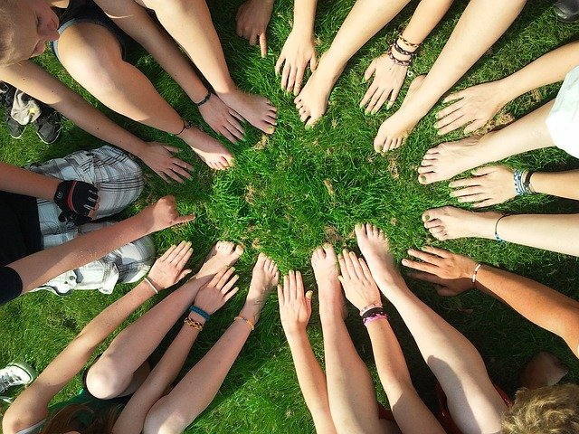

회사개요
인사말
무림 홈페이지를 찾아주신 여러분을 진심으로 환영합니다.
- 종이는 문화를 담는 그릇입니다.
- 무림은 1956년 설립 이래 반세기가 넘게 한국의 제지산업을 선도해오면서 단순히 종이를 만든다는 생각보다 인류의 문화발전에 이바지한다는 사명감으로 일해왔습니다. 무림은 우리나라의 문화산업이 꽃 필 수 있도록 지난 1959년 국내 최초로인쇄용지 대량생산시대를 열었고, 1974년에는 국내에서 유일하게 펄프를 생산하면서 국내 제지산업이 발전하는데 밑거름이 되었습니다.
- 또한 지난 2011년 5월에는 국내에서는 최초이자 유일한 펄프-제지 일관화공장을 완공하면서 한국의 제지산업이 한 단계 도약할 수 있는 제지역사의 한 획을 그었습니다.
- 무림은 지구의 환경을 먼저 생각하고 보호하는 친환경기업입니다.
- 제지산업은 천연림을 베어 종이를 만든다는 오해가 보편적입니다. 그러나 이와는 달리 제지산업은 나무를 심고 가꾸는 조림사업에 적극적이고 또한 순환 경작을 통해 조림한 조림목과 간벌목을 이용해 펄프와 종이를 만들기 때문에 오히려 조림을 통해 이산화탄소를 흡수하고 있어 어느 산업보다도 친환경적입니다.
- 특히, 무림은 불법으로 벌채된 나무를 전혀 사용하지 않으며, 세계산림관리협의회가 인증한 FSC 인증 목재와 펄프만을 사용하고 있습니다. 또한, 최근 완공한 일관화공장은 기름 한 방울 쓰지 않고 종이를 생산하는 친환경 녹색공장이기도 합니다.
- 회사 홍보의 장이 아닌 의사소통의 장이 되길 바랍니다.
- 무림의 홈페이지를 통해 무림을 조금 더 알고 이해되기를 바라며, 여러분의 의견이 무림에게 전해지는 소통의 장이 되기를 진심으로 바랍니다.무림 홈페이지는 일방적인 홍보의 장이 아닌 여러분과 의사소통의 장이 되도록 하겠습니다. 여러분의 많은 관심과 참여를 바랍니다. 감사합니다.
가치관
-
01
가치를 만드는 기업, 무림 -
무림은 1956년 설립 이래 반세기 넘게 한국의 종이역사를 선도해온 기업입니다. 지난 1959년 국내 최초로 백상지 대량 생산에 성공하며 대한민국 고급 인쇄용지 시대를 개막한 이후부터 1974년 국내 최초로 펄프 생산, 1999년 국내 최초로 프리미엄 더블코팅 아트지 생산, 2011년 국내 최초이자 유일한 펄프-제지 일관화공장 준공까지 매순간 대한민국 제지산업에 큰 획을 그어왔습니다. 단순히 종이를 만든다는 생각보다, 인류의 생활에 이바지하며 새로운 가치를 만들어간다는 사명감을 담아 ‘종이’를 통한 무한가능성을 제시하겠습니다.
건강한 욕심원칙을 준수한다. 바르게 행동한다. 서로를 존중한다. 실패를 두려워하지 않는다. 함께 고민해 이뤄낸다. 항상 더 나은 미래를 생각한다.
-
“불법으로 벌목된 목재나 비산림 지역의 목재, 유전적으로 변형된 목재를 제품에 사용하지 않는다.” 무림의 약속입니다. 제지산업은 천연림을 베어 종이를 만든다는 잘못된 오해와 달리 그 어떤 산업보다도 나무를 심고 가꾸며, 환경을 보호하는데 적극적입니다. 무림은 국내 제지업계 최초로 FSC®-CoC 인증을 획득하며 지속가능한 산림경영에 앞장서 왔으며, ‘저탄소제품 인증’도 획득하며 국내 생산되는 종이들 중 탄소배출량이 가장 적은 친환경 제품으로 인정받고 있습니다. 기름 한 방울 쓰지 않고 종이를 생산하는 펄프-제지 일관화공장 등 환경친화적 생산시스템을 근간으로 다양한 친환경 종이 제품 개발에 앞장서겠습니다.
생활에 가치를 더하는
펄프 , 제지 기술최고의 펄프·제지 기술로 세상이 필요로 하는 친환경 소재를 개발하여 생활에 가치를 더한다.
-
02
환경을 생각하는 기업, 무림 
-
03
고객과 소통하는 기업, 무림 -
무림은 고객을 최우선으로 생각합니다. 최고 품질의 제품만이 아니라 보다 나은 가치와 편의를 제공하며 더욱 신뢰받는 기업이 되고자 끊임없이 소통하겠습니다. 무림 홈페이지가 고객과의 의미 있는 의사소통의 공간이 되기를 바라며, 많은 관심과 응원 부탁드립니다.
펄프의 가능성,
무림이 만드는 제지의 새로운 미래핵심사업- 펄프, 제지, 신소재
핵심전략- 특수 기능지 확대
CI
미래 비전 실현을 위한 무림의 힘찬 도약을 Bridge & Paper를 모티프로 형상화하였다. 역동적인 Symbol은 이상의 성취를 위해 도약하는 무림의 기상을 나타내며, 산세리프의 볼드한 로고타입은 무한한 발전을 약속하는 무림의 Power와 신뢰를 나타낸다. ‘미래를 향한 다리’를 형상화한 브릿지(Bridge)는 글로벌 리더 로서의 진취적인 기상과 환경경영을 통해 고객 곁으로 다가 가고자 하는 무림의 비전을 담음.
- 브릿지(Bridge)의 그린컬러는 환경 및 고객친화적인 기업이념 상징
- 영문 워드마크의 블루컬러는 비전과 신뢰의 투명한 기업이념
- ※무림의 CI 로고가 필요하신 분은 메일로 요청해주세요.
-
pantone 293C cmyk 89/57/0/0 rgb 1, 107, 183 hsl 205, 99%, 36% -
pantone 376C cmyk 56/0/99//0 rgb 124, 194, 66 hsl 93, 51%, 51% -
pantone COOL GRAY 5C cmyk 19/15/16/0 rgb 204, 204, 204 hsl 0, 0%, 80%